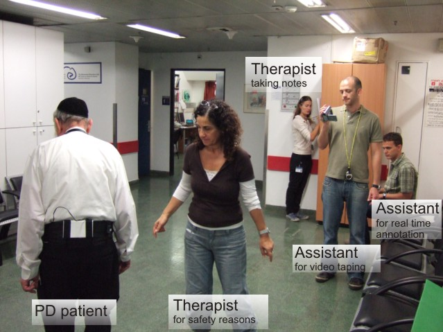
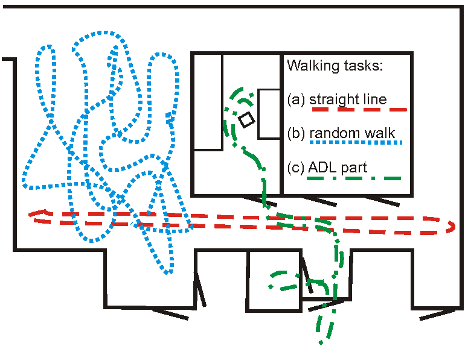

Daphnet Freezing of Gait Dataset in users with Parkinson's
disease

Overview
The Daphnet Freezing of Gait Dataset in users with Parkinson's
disease (hereafter Daphnet Freezing of Gait Dataset) is a dataset
devised to benchmark automatic methods to recognize gait freeze
from wearable acceleration sensors placed on legs and hip.
This dataset is the result of a collaboration between the
Laboratory for Gait and Neurodynamics, Tel Aviv Sourasky Medical
Center, Israel and the Wearable Computing Laboratory, ETH Zurich,
Switzerland.
Recordings were run at the Tel Aviv Sourasky Medical Center in
2008.
The study was approved by the local Human Subjects Review
Committee, and was performed in accordance with the ethical
standards of the Declaration of Helsinki.
For more informations see [1] and additional references below.
Recording scenario

The dataset was recorded in the lab with emphasis on generating
many freeze events. Users performed there kinds of tasks: straight
line walking, walking with numerous turns, and finally a more
realistic activity of daily living (ADL) task, where users went
into different rooms while fetching coffee, opening doors, etc.
Sensors

The dataset comprises 3 wearable wireless acceleration sensors
(see [10] for sensor details) recording 3D acceleration at 64 Hz.
The sensors are placed at the ankle (shank), on the thigh just
above the knee, and on the hip.
Dataset
The dataset contains the following files:
- dataset/
S<ss>R<rr>.txt: dataset of user <ss>
in recording run <rr>
For all practical purposes all runs of one subject should be
combined in the evaluations. Separate runs were the results of
recording technicalities and the need for users to make breaks.
Users 4 and 10 did not show any freeze.
Each file comprises the data in a matrix format, with one line per
sample, and one column per channel. The channels are as follows:
- Time of sample in millisecond
- Ankle (shank) acceleration - horizontal forward acceleration
[mg]
- Ankle (shank) acceleration - vertical [mg]
- Ankle (shank) acceleration - horizontal lateral [mg]
- Upper leg (thigh) acceleration - horizontal forward
acceleration [mg]
- Upper leg (thigh) acceleration - vertical [mg]
- Upper leg (thigh) acceleration - horizontal lateral [mg]
- Trunk acceleration - horizontal forward acceleration [mg]
- Trunk acceleration - vertical [mg]
- Trunk acceleration - horizontal lateral [mg]
- Annotations (see Annotations section)
Annotations
The meaning of the annotations are as follows:
- 0: not part of the experiment. For instance the sensors are
installed on the user or the user is performing activities
unrelated to the experimental protocol, such as debriefing
- 1: experiment, no freeze (can be any of stand, walk, turn)
- 2: freeze
Scripts
The following Matlab scripts allow to visualize and process the
data:
- scripts/do_plot:
loads and display the sensor readings. For instance, from the
scripts directory: do_plot('../dataset/S01R01.txt');
- scripts/do_test:
can be used to run the freeze detection algorithm described in
[1]. Note that this is a streamlined version of the scripts used
in that publication. In particular, the parameters of the
algorithm (TH.freeze=threshold freeze and TH.power threshold
power) must be selected or optimized according to the subject,
and sensor placement/orientation.
Remarks
This dataset was used for publications listed in the References
section. This is a reduced version of the dataset comprising only
the information used in the published analyses with rewritten,
streamlined evaluation scripts. Default algorithm parameters are
provided.
Annotations were done a posteriori by video analysis. However, due
to the manual process and at times hard to defined boundaries of
freezes, there may be up to a couple of 100 ms of jitter between the
onset of annotations and the effective occurrence of an event.
License
Use of this dataset in publications must be acknowledged by
referencing the following publication [1]. We also appreciate if you
inform us (droggen@gmail.com) of any publication using this dataset
for cross-referencing purposes.
Reference [1] describes the dataset in details. It explain the data
acquisition protocol, the kind of sensor used and their placement,
and the nature of the data acquired. It also provides baseline
results for the automated detection of freezing of gait, against
which newer methods can be benchmarked. In particular it describes
detection sensitivity/specificity for 3 sensor placements and 4
kinds of derived sensor signals, it analyzes detection latency, and
provides first insight into user specific v.s. user independent
performance.
References
Preferred citation:
[1] Marc Bächlin, Meir Plotnik, Daniel Roggen, Inbal Maidan,
Jeffrey M. Hausdorff, Nir Giladi, and Gerhard Tröster, Wearable Assistant for Parkinson's
Disease Patients With the Freezing of Gait Symptom. IEEE
Transactions on Information Technology in Biomedicine, 14(2), March
2010, pages 436-446
Other first party publications
based on this dataset:
[2] Marc Bächlin, Meir Plotnik, Daniel Roggen, Nir Giladi,
Jeffrey M Hausdorff and Gerhard Tröster, A Wearable System to Assist Walking of
Parkinson's Disease Patients.Methods of Information in
Medicine, 49:1(88-95), 2010
[3] Meir Plotnik, Marc Bächlin, Inbal Maidan, Daniel Roggen,
Gerhard Tröster, Nir Giladi and Jeffrey M Hausdorff, Automated biofeedback assistance for
freezing of gait in patients with Parkinson's disease.
Proceedings of the International Society for Posture and Gait
Research (ISPGR), Bologna, Italy, 2009
[4] Meir Plotnik, Marc Bächlin, Daniel Roggen, Noit Inbar,
Inbal Maidan, Talia Herman, Marina Brozgol, Eliya Shaviv, Gerhard
Tröster and Jeffrey M Hausdorff, Automated treatment of freezing of gait in Parkinson's
disease using a wearable device that automatically detects
freezing. Annual meeting of the Israeli Neurological
Society, Israel, pages 63, 2009
[5] Marc Bächlin, Daniel Roggen, Meir Plotnik, Jeffrey M
Hausdorff, Nir Giladi and Gerhard Tröster, Online Detection of Freezing of Gait
in Parkinson's Disease Patients: A Performance Characterization.
Proceedings of the 4th International Conference on Body Area
Networks, 2009
[6] Marc Bächlin, Meir Plotnik, Daniel Roggen, Noit Inbar, Nir
Giladi, Jeffrey M Hausdorff and Gerhard Tröster. Parkinson patients' perspective on
context aware wearable technology for auditive assistance.
Proceedings of the 3rd International Conference on Pervasive
Computing Technologies for Healthcare, 2009
[7] Marc Bächlin, Daniel Roggen, Meir Plotnik, Noit Inbar,
Inbal Maidan, Talia Herman, Marina Brozgol, Eliya Shaviv, Nir
Giladi, Jeffrey M Hausdorff and Gerhard Tröster,
Potentials of enhanced context
awareness in wearable assistants for Parkinson’s disease patients
with freezing of gait syndrome. Proceedings of the 13th
International Symposium on Wearable Computers (ISWC), pages 123-130,
2009
[8] Sinziana Mazilu, Michael Hardegger, Zack Zhu, Daniel Roggen, Gerhard Tröster, Meir Plotnik, Jeff Hausdorff,
Online Detection of Freezing of Gait with Smartphones and Machine Learning Techniques. Proc 6th Int Conf on Pervasive Computing Technologies for Healthcare, 2012
Sensors:
[10] Daniel Roggen, Marc
Bächlin, Johannes Schumm, Thomas Holleczek, Clemens
Lombriser, Lars Widmer, Dennis Majoe, Jürg Gutknecht and
Gerhard Tröster, An educational and
research kit for activity and context recognition from on-body
sensors. International
Conference on Body Sensor Networks, 2010
Authors
- Laboratory for Gait and Neurodynamics, Tel Aviv Sourasky
Medical Center, Israel: Meir Plotnik, Jeffrey M. Hausdorff, Nir
Giladi
- Wearable Computing Laboratory, ETH Zurich, Switzerland: Marc
Bächlin, Daniel Roggen, Gerhard Tröster
Acknowledgements
This dataset was collected as part of the EU FP6 project Daphnet,
grant number 018474-2.
Additional effort to publish this dataset was supported in part by
the EU FP7 project CuPiD, grant number 288516.